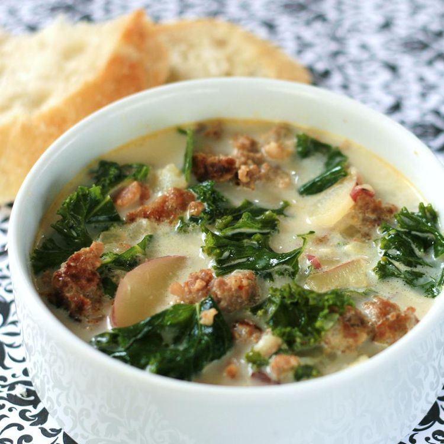

Zuppa
How to Make Zuppa Tuscana

- Cook the Italian sausage with the red pepper flakes.
- Cook the bacon, then cook the onion and garlic in the bacon drippings.
- Add the broth and bring to a boil, then add the potatoes and simmer.
- Reduce the heat and stir in the cream, cooked sausage, and spinach.